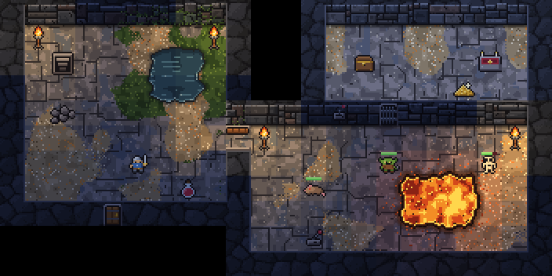
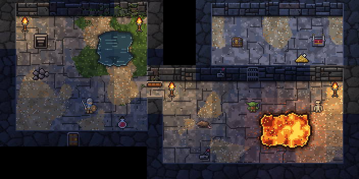
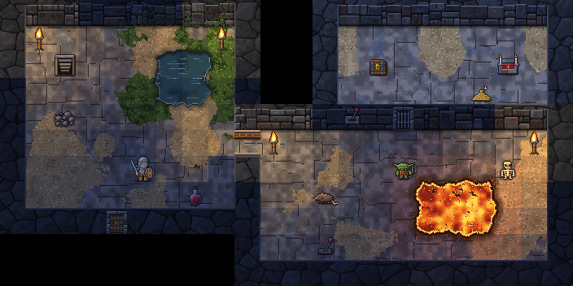

The same room drawn four ways and switched in place, to see where 32 by 32 pixels help: first only the figures, then the chest and the altar as well, then everything. The world is Torchlit, 16×16's; the figures at 32 by 32 are Torchlit, 32×32's, with the hero in a chain shirt, helm, sword and round shield from Torchlit, 16×16's version 2.2. Health bars are left out of all four, so only the drawing changes.

1 · Torchlit, 16×16 as it is: the world and the figures both drawn at 16 by 16, so every pixel shows as 2 by 2 at the game's size.2 · The same world, with the adventurer, the goblin, the skeleton and the giant rat at 32 by 32: twice the detail of the ground, so the hero's helm, mail, sword and shield show.

3 · As 2, and the chest and the altar in the vault at 32 by 32 as well. The rest stays at 16 by 16: the floor, the walls, the doors, the torches, the gold and the potion.

4 · Everything at 32 by 32: Torchlit, 32×32's room, with the same hero.